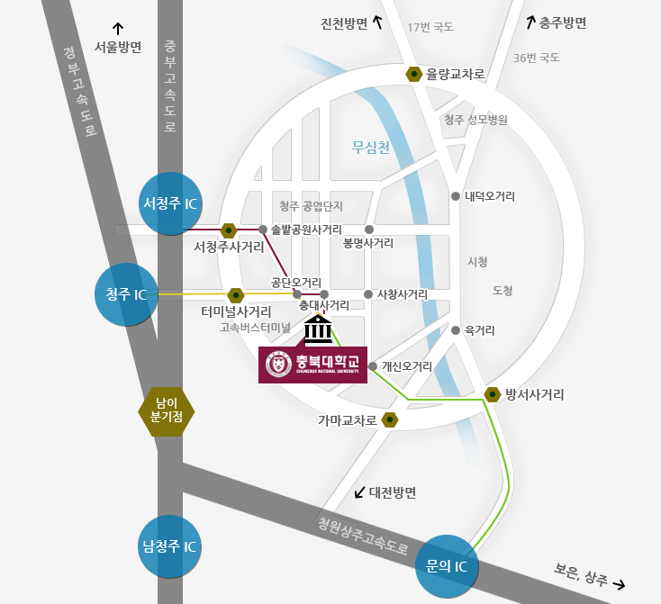

OPEN KNOWLEDGE
강의·자료
배움을 나누고, 지식을 이어갑니다.
공개 강의
연구실 자료 보관함
Professor
원본 수정일: 2016-08-21
Prof. Keon Myung Lee
He received his BS, MS, and Ph.D. degrees in computer science from KAIST(Korea Institute of Science and Technology), Korea and was a Post-doc fellow in INSA de Lyon, France. He was a visiting professor in University of Colorado at Denver and a visiting scholar in Indiana University, USA. After having an industrial career at Silicon Valley, USA, he joined Dept. of Computer Science, Chungbuk National University, Korea in 1995. Now he is a professor. He serves as the Editor-in-Chief of International Journal of Fuzzy Logic and Intelligent Systems. His principal research interests are in data mining, machine learning, soft computing, big data processing, and intelligent service systems.Professional Experience
1986 - 1990 : KAIST, KIT, Dept. Computer Science, BS 1990 - 1992 : KAIST, Dept. Computer Science, MS 1992 - 1995 : KAIST, Dept. Computer Science, Ph.D 1995 - 1996 : INSA de Lyon (France), Post-Doc. Research Fellow 1996 - 1996 : Park Scientific Instrument (Sunnyvale, Calif. USA), Staff Scientist 2001 - 2003 : Dept. of Comp. Sci. and Eng., Univ. of Colorado at Denver(Denver, USA), Visiting Professor 2004 - 2005 : MedVan Inc., CTO. 2008 - 2009 : Indiana University (Bloomington, USA), Visiting Scholar 2013 - present : Editor in Chief, International Journal of Fuzzy Logic and Intelligent Systems 1996 - present: Chungbuk Nat. Univ., Dept. of Computer Science, Professor cited in Marquis Who's Who in the World.Research Interests
Artificial Intelligence and Soft Computing Deep Learning and Machine Learning Big data analysis and Big data service system design Data Mining Intelligent Information Systems and Applications BioInformatics and Medical information servicesLectures
Artificial Intelligence, Undergraduate, Chungbuk National Univ. Multimedia Systems, Undergraduate, Chungbuk National Univ. Computer Graphics, Undergraduate, Chungbuk National Univ. Computer Architecture, Undergraduate, Chungbuk National Univ. Linear Algebra, Undergraduate, Chungbuk National Univ. Operating Systems, Undergraduate, Chungbuk National Univ. Introduction to Programming (C, C++, Java), Undergraduate, Chungbuk National Univ. Windows Programming, Undergraduate, Chungbuk National Univ. HCI Programming, Undergraduate, Chungbuk National Univ. Lab. of Information Processing, Undergraduate, Chungbuk National Univ. Discrete Structures, Undergraduate, Univ. of Colorado at Denver Algorithms, Undergraduate, Chungbuk National Univ., Univ. of Colorado at Denver Machine Learning, Graduate, Chungbuk National Univ. Data Mining, Graduate, Chungbuk National Univ. Agent Systems, Graduate, Chungbuk National Univ. Bioinformatics, Graudate, Chungbuk National Univ. Bio Information Processing, Graduate, Chungbuk National Univ. Cryptography and Security, Graduate, Chungbuk National Univ. Advanced Artificial Intelligence, Graduate, Chungbuk National Univ. Decision Making Theory, Graduate, Chungbuk National Univ. Advanced Algorithms, Graduate, Univ. of Colorado at Denver Knowledge-based Systems, Graduate, Chungbuk National Univ.Professional Experience
1990-1991: Graphical Programming based on Petri Nets, KAIST 1991-1992: Rail Vehicle Scheduling System for Steelworks, DaeWoo Engineering Co. 1993-1994: Hyrid Systems of Fuzzy Systems and Neural Networks, STEPI 1995-1996: Evolutionary Petri net models for production systems, INSA de Lyon, France 1996 : Development of Control S/W for Voltage Prober, PSI, California 1996-1997: Intelligent Scheduling for Subway system, STEPI 1998-2000: A Study on Data Mining Techniques for Databases with Fuzzy Data, IITA 1998-1999: Classification Rule Mining for Fuzzy Databases, KRF 1999-2004: Agent Systems for Distributed Integrated Systems, AITrc/KOSEF 2003-2005: Intelligent SoC(System-on-a-Chip) for Recognition and Learning Engines, Forentier/MOST. 2004-2005: Intelligent u-distributed context-aware middleware system, Ubiquitous Bioinformation Research Center. 2004-2006: Ubiquitous healthcare system for Benign Prostatic Hyperplasia patents, ITEP 2005-2008: Bioinformatics tool development and analysis for virus disease control, KRF 2006: Stereoscopic 3D VR Simulator S/W Development, Cheongju city/TrueD Inc. 2006-2008: Ubiquitous urological hospital system for chronic patients, ITEP 2004-2008: Development of artificial intelligence component techniques for Distributed integrated systems, AITrc/KOSEF 2008-2011: Disease Pharmacokinetics Simulation, Ministry of Education, Science and Technoly 2008-2014: Self-organizing knowledge evolution technology development for personalized medicine, Korea Research Foundation 2011-2015: Science of Beauty (Generative Design using machine learning technique), Korea Research Foundation 2012-present: Big Data Service Development for Daily Life, ITRC 2014: Data quality evaluation and control techniques for big biological data, LINC/KRF 2015: Meta-data construction and Big data service system design for omic databases, Korea CDC 2015-present: Probabilistic graphical models for care-needing person cares, KRF 2016-present: Big data modeling and open data service development of e-Navigation, Ministry of Oceans and FisheriesPublications
원본 수정일: 2021-07-10
Research Papers
full list (2021)- KM Lee, S Ean, M Bazarbaev, A Nasridinov, KH Yoo, "Dynamic programming-based computation of an optimal tap working pattern in nonferrous arc furnace", The Journal of Supercomputing, 2021
- KM Lee, I Ra, "Data privacy-preserving distributed knowledge discovery based on the blockchain", Information Technology and Management 21 (4), 2020
- KM Lee, CS Han, "Towards Diversity: Neural Architecture Search with Diverse Structure", 한국콘텐츠학회 ICCC 논문집, 2020
- KM Lee, CS Han, "Channel-Wise Attention and Channel Combination for Knowledge Distillation", Proceedings of the International Conference on Research in Adaptive and Convergent Systems, 2020
- KM Lee, J Han, KS Park, "An Automated Machine Learning Platform for Non-experts", Proceedings of the International Conference on Research in Adaptive and Convergent Systems, 2020
- KM Lee, CS Han, "Spiking Neural Network Transformer for Deploying into a Deep Learning Framework, Proceedings of the International Conference on Research in Adaptive and Convergent Systems, 2020
- KM Lee, VNC Huynh, " Solving the Multi-class Classification Task in Spiking Neural Network by using Supervised Spiking Learning Rule with a Consistent Competitive Mechanism", Proceedings of the International Conference on Research in Adaptive and Convergent Systems, 2020
- KM Lee, KS Park, KS Hwang, KI Kim, "Deep neural network model construction with interactive code reuse and automatic code transformation", Concurrency and Computation: Practice and Experience 32 (18), 2020
- KM Lee, HCV Ngu, "Training Deep Forward Spiking Convolutional Neural Networks with STDP Pre-training Followed by Direct Supervised Learning Rule", 한국정보과학회 학술발표논문집, 2020
- KM Lee, SY Lee, CS Han, SM Choi, "Long bone fracture type classification for limited number of CT data with deep learning", Proceedings of the 35th Annual ACM Symposium on Applied Computing, 2020
- KM Lee, YJ Lee, SH Lee, "Blockchain-based reputation management for custom manufacturing service in the peer-to-peer networking environment", Peer-to-Peer Networking and Applications 13 (2), 2020
- KM Lee, KI Kim, "Convolutional neural network-based gear type identification from automatic identification system trajectory data", Applied Sciences 10 (11), 2020
- KM Lee, YJ Lee, "Blockchain-based Key Discovery Mechanism for Data Sharing", 한국콘텐츠학회 ICCC 논문집, 2019
- KM Lee, CS Han, "Policy-based Learning of Spiking Neural Networks", 한국콘텐츠학회 ICCC 논문집, 2019
- KM Lee, J Yoo, SW Kim, JH Lee, J Hong, "Autonomic machine learning platform", International Journal of Information Management 49, 2019
- KM Lee, YJ Lee, "Blockchain-based RBAC for user authentication with anonymity", In Proceedings of the Conference on Research in Adaptive and Convergent Systems, 2019
- KM Lee, B Hong, J Cho, B Kim, H Min, J Hong, "A study on supporting spiking neural network models based on multiple neuromorphic processors", Proceedings of the Conference on Research in Adaptive and Convergent Systems, 2019
- KM Lee, KS Park, KS Hwang, CS Han, J Han, "Machine learning modeling assistance for non-expert developers", Proceedings of the Conference on Research in Adaptive and Convergent Systems, 2019
- KM Lee, YJ Lee, SH Woo, "Blockchain-based Contract Mechanism using DHT for Privacy", International Conference on Future Information & Communication Engineering, 2019
- KM Lee, S Bhardwaj, JH Lee, "An adaptive framework for applying machine learning in smart spaces", Proceedings of the 34th ACM/SIGAPP Symposium on Applied Computing, 2019
- KM Lee, CS Han, JN Jun, JH Lee, SH Lee, "Batch-free Event sequence pattern mining for communication stream data with instant and persistent events", Wireless Personal Communications 105 (2), 2019
- KM Lee, KI Kim, "Adaptive Information Visualization for Maritime Traffic Stream Sensor Data with Parallel Context Acquisition and Machine Learning", Sensors 19 (23), 2019
- KM Lee, JW Park, KI Kim, Automatic identification system based fishing trajectory data preprocessing method using map reduce, Int. J. Recent Technol. Eng 8 (2S6), 2019
- KM Lee, CS Han, KI Kim, SH Lee, "Word recommendation for English composition using big corpus data processing", Cluster Computing 22 (1), 2019
- KM Lee, YS Jeong, SH Lee, KM Lee, "Bucket-size balancing locality sensitive hashing using the map reduce paradigm", Cluster Computing 22 (1), 2019
- KM Lee, KS Hwang, KS Park, SH Lee, KI Kim, "Autonomous machine learning modeling using a task ontology", Joint 10th International Conference on Soft Computing and Intelligent Systems (SCIS) and 19th International Symposium on Advanced Intelligent Systems (ISIS), 2018
- KM Lee, KI Kim, "Classification of Fishing Operation Pattern Using Deep Neural Network", 한국콘텐츠학회 ICCC 논문집, 2018
- KM Lee, SH Lee, KI Kim, "Improved Data-Driven Prediction of Vessel Destinations", 한국콘텐츠학회 ICCC 논문집, 2018
- KM Lee, S Bhardwaj, "A Smart Space Design using Deep Learning Approaches", 한국콘텐츠학회 ICCC 논문집, 2018
- KM Lee, VNH Cong, "A new Method for Parallel R-tree Implementation on the GPU", 한국콘텐츠학회 ICCC 논문집, 2018
- KM Lee, KS Park, KS Hwang, "Adjacent Layer Configuration Support in Deep Neural Network Modeling", 한국콘텐츠학회 ICCC 논문집, 2018
- KM Lee, S Bhardwaj, T Ozcelebi, JJ Lukkien, "Smart space concepts, properties and architectures", IEEE Access 6, 2018
- KM Lee, KI Kim, "Dynamic Programming-Based Vessel Speed Adjustment for Energy Saving and Emission Reduction", Energies 11 (5), 1273, 2018.5
- KM Lee, KI Kim, "Context-Aware Information Provisioning for Vessel Traffic Service Using Rule-Based and Deep Learning Techniques" ,International Journal of Fuzzy Logic and Intelligent Systems 18 (1), 13-19, 2018.3
- KM Lee, S Bhardwaj, T Ozcelebi, JJ Lukkien, "Semantic interoperability architecture for smart spaces", International Journal of Fuzzy Logic and Intelligent Systems 18 (1), 50-57, 2018.3
- KM Lee, KM Lee, SH Lee, "Remote data integrity check for remotely acquired and stored stream data", The Journal of Supercomputing 74 (3), 1182-1201, 2018.3
- KM Lee, CS Han, KI Kim, SH Lee, "Word recommendation for English composition using big corpus data processing", Cluster Computing, 1-14, 2018
- KM Lee, KI Kim, CS Han, "Development of Integrated Information System for Vessel Traffic Service Operator", 한국콘텐츠학회 ICCC 논문집, 211-212, 2017.12
- KM Lee, KI Kim, CS Han, "Categorizing Ship’s Speed Data for Applying Artificial Neural Network in Harbour Area", 한국콘텐츠학회 ICCC 논문집, 363-364, 2017.12
- KM Lee, KI Kim, "Preprocessing Ship Trajectory Data for Applying Artificial Neural Network in Harbour Area", 2017 European Conference on Electrical Engineering and Computer Science (EECS), 2017.11
- KM Lee, KI Kim, "Ship encounter risk evaluation for coastal areas with holistic maritime traffic data analysis", Advanced Science Letters 23 (10), 9565-9569, 2017.10
- KM Lee, J Yoo, J Hong, "Autonomic Machine Learning for Intelligent Databases", International Conference on Applied Physics, System Science and Computers, 2017.9
- KM Lee, KI Kim, J Yoo, "Autonomicity Levels and Requirements for Automated Machine Learning", Proceedings of the International Conference on Research in Adaptive and Convergent Systems, 2017.9
- K Lee, K Bok, G Ko, J Lim, J Yoo, "Contents Recommendation Scheme Considering Trust and Collaborative Filtering in Online Social Networks", Proceedings of the International Conference on Research in Adaptive and Convergent Systems, 2017.9
- KM Lee, SY Lee, KM Lee, SH Lee "Density and frequency-aware cluster identification for spatio-temporal sequence data", Wireless Personal Communications 93 (1), 47-65, 2017.3
- KM Lee, YS Jeong, SH Lee, KM Lee, "Bucket-size balancing locality sensitive hashing using the map reduce paradigm", Cluster Computing, 1-13, 2017
- KM Lee, CS Han, "Pattern Mining in Multiple Sources Temporal Data", 한국콘텐츠학회 ICCC 논문집, 45-46, 2016.12
- KM Lee, SJ Kang, KM Lee, "Context-aware abnormality monitoring service for care-needing persons using a probabilistic model", Indian Journal of Science and Technology 9 (24), 2016.6
- KM Lee, KM Lee, "Efficient Search for Data with Numerical and Categorical Attributes Based on Dual Locality-Sensitive Hashing", Indian Journal of Science and Technology, Indian Society for Education and Environment, 9, 2016.06
- KM Lee, KM Lee, “Data Quality Metrics for Data Entry Time Quality Evaluation”, International Journal of Systems Applications, engineering & Development, University Press, University Press, 10, 2016.06
- KM Lee, YK Kim, “Saliency Score-Based Visualization for Data Quality Evaluation”, International Journal of Fuzzy Logic and Intelligent Systems, 15(4), 2015.12
- KM Lee, YK Kim, "Association-based outlier detection for mixed data", Indian Journal of Science and Technology, Indian Society for Education and Environment, 8, 2015.10
- KM Lee, SJ Kang, SY Lee, "Performance comparison of OpenMP, MPI, and MapReduce in practical problems", Advances in Multimedia, Hindawi Publishing Corporation, 2015, 2015.08
- KM Lee, "Grid-based single pass classification for mixed big data", International Journal of Applied Engineering Research, Research India Publications, 9, 2014.09
- KM Lee, "Locality sensitive hashing with replicated coverage", International Journal of Applied Engineering Research, Research India Publications, 9, 2014.09
- KM Lee, "Cluster validity evaluation for small number of clusters", International Journal of Applied Engineering Research, Research India Publications, 9, 2014.09
- KM Lee, KM Lee, "Fast Fuzzy Search for Mixed Data Using Locality Sensitive Hashing", Applied Mechanics and Materials, Trans Tech Publications, 462-463, 2014.02
- KM Lee, CH Lee, YB Cho, KS Hwang, "A Formal Description for the Life Cycle of Viruses using Frames and Tuple Representations", International Journal of Advancements in Computing Technology, Advanced Institute of Convergence Information Technology Research Center, 5, 2013
- KM Lee, "Locality Sensitive Hashing with Extended Partitioning Boundaries", Applied Mechanics and Materials, Trans Tech Publications, 321-324, 2013.06
- KM Lee, "A Projection-based Locality-Sensitive Hashing Technique for Reducing False Positives", Applied Mechanics and Materials, Scitec Publications Ltd., 1660-9336, 2013.01
- KM Lee, KM Lee, "A Locality Sensitive Hashing Technique for Categorical Data", Applied Mechanics and Materials, Scitec Publications Ltd., 241-244, 2013.01
- KM Lee, KM Lee, "Efficient Identification of Frequent Family Subtrees in Tree Database", Applied Mechanics and Materials, Scitec Publications Ltd., 241-244, 2013.01
- KM Lee, KM Lee, CH Lee, "Mining Frequent Common Families in Trees", Lecture Notes in Computer Science, Springer Verlag, 7694, 2012.12
- KM Lee, KM Lee, SB Lee, WH Jung, SK Han, KS Hwang, "Supervised Learning-Based Feature Selection for Mondrian Paintings Style Authentication", Journal of Advanced Computational Intelligence and Intelligent Informatics, Fuji Technology Press Ltd., 16, 2012.11
Patents
(2020)- 이건명, 한찬식, "스파이크 트레인 신호 생성 장치 및 방법", 2020.12
- 이건명, 유상록, "AIS 신호의 음영지역 시각화 장치 및 방법", 2020.12
- 이건명, 이용주, "블록체인 기반의 보험금 청구 정보 공유를 통한 보험사기 검출 시스템", 2020.12
- 이건명, 이용주, "블록체인에 기반하여 유저들의 평판을 관리하는 방법 및 시스템", 2020.12
- 이건명, 이용주, "외부 스토리지를 이용한 블록체인 기반의 스마트 계약 시스템 및 방법", 2020.12
- 이건명, 이용주, "블록체인 기반의 바우처 제공방법 및 시스템", 2019.12
- 이건명 , 구본철 , 남영우 , 김승수, "블록체인기술을 이용한 공동번역방법, 2019.12
- 이건명 , 황운지 , 조민식 , 강유빈, "교통약자용 실시간 이동경로 제공방법", 2019.12
- 이건명 , 이용주 , 유상록, "블록체인 기반의 데이터 프라이버시를 제공하는 분산 지식 발견 시스템 및 방법(Data Privacy-Preserving Distributed Knowledge Discovery system based on the Blockchain and Method thereof)", 2019.11
- 이건명 , 이용주 , 유상록, "블록체인 기반의 머신러닝 학습 모델 무 신뢰 기반 거래 시스템 및 거래 방법(Blockchain based Machine learning training model trading method without trust)", 2019.11
- 이건명 , 김광일, "컨볼루션 신경망 기반의 선박 교통 밀도 예측 방법 및 장치(METHOD AND APPARATUS FOR PREDICTING SHIP TRAFFIC DENSITY BASED ON CONVOLUTIONAL NETWORK)", 2019.02
- 이건명 , 김광일, "동적 계획법을 이용한 선박의 최적 항해 속력 제공 시스템(SYSTEM FOR PROVIDING OPTIMAL SAILING SPEED OF SHIP USING DYNAMIC PROGRAMMING), 2019.02
- 이건명 , 김광일, "맵리듀스를 이용한 선박 외력 추정 시스템 및 방법(System and method for estimating external forces acting on ship by MapReduce)", 2018.09
- 이건명 , 김광일, "교통관리 모니터링 방법 및 장치(Method And Apparatus for Monitoring Traffic Management)", 2018.04
- 이건명 , 김광일, "딥러닝 알고리즘 기반의 항만 데이터를 이용한 선박 목적지 예측 방법 및 장치(Method And Apparatus for Predicting Vessel Destination by Using Port Data based on Deep Learning Algorithm)", 2018.04
- 이건명 , 한찬식, "스트림 데이터에 대한 실시간 빈발 사건 마이닝 방법 및 장치(Real-time mining method and apparatus of frequent event on stream data)", 2018.04
- 이건명 , 윤기돈 , 조재연 , 문성준, "가계도를 이용한 무덤 정보 공유 방법(METHOD FOR GRAVE INFORMATION USING FAMILY TREE)", 2017.09
- 이건명 , 김광일, "항만 입출항데이터를 이용한 통항로 선박교통특성 분석장치 및 방법(Method and Apparatus for Analyzing Ship Traffic Characteristics with Port Entry and Departure Data)", 2017.08
- 이건명 , 강아름, "데이터 익명성을 보장하면서 데이터 분석에 유용한 공개 데이터 생성 시스템 및 방법(SYSTEM AND METHOD FOR RECOMMENDING PUBLIC DATA GENERALIZATION LEVEL GUARANTEEING DATA ANONYMITY AND USEFUL TO DATA ANALYSIS)", 2017.03
- 이건명, 한찬식, "스트림 데이터에 대한 단일 패스 빈발 등시 사건 집단 마이닝 방법 및 그 장치(A method of single-pass mining of frequent simultaneous event groups for stream data, an apparatus for single-pass mining of frequent simultaneous event groups for stream data)", 2017.01
- 이건명, 한찬식, "말뭉치의 통계적 기반 분석을 통한 패턴 기반 영어 단어 추천 장치 및 방법(Apparatus and method for recommending pattern-based English word using statistical analysis of corpus)", 2016.11
- 이건명 , 유준규 , 최성락 , 홍석춘, "온라인 상에서의 열람정보에 대한 오프라인 상에서의 액세스 시스템 및 방법(SYSTEM AND METHOD FOR ACCESSING SEARCH INFORMATION WITH OFFLINE)", 2016.11
- 이건명 , 한유일 , 전병준 , 연제성, "디지털 포렌식을 위한 드라이브 접근시스템 및 방법(DRIVE MOUNTER SYSTEM AND METHOD FOR DIGITAL FORENSIC)", 2016.11
- 이건명, 강아름, "취침 자세에 따른 베개 높이 조절 방법(Height Adjustable Pillow and A Method to Automatically Adjust The Height of Pillow According to Sleep Pose)", 2016.08
- 이건명, "순차적 데이터의 시그니처 추출 모듈, 데이터 검증 모듈 및 무결성 감시 시스템(Signature Extraction Module, Data Verification Module and integrity monitoring System for Sequence Data)", 2016.02
- 이건명, 강솔지, "칼만 필터 기반 보정된 GPS 좌표에 대한 거리 맵핑 알고리즘", 2015.12
- 이건명, 이상연, "서열 데이터의 밀도와 빈도를 고려한 파티셔닝 클러스터링", 2015.12
- 이건명, 강솔지, "동적 베이지안 망을 이용한 이동 패턴 확률 모델링", 2015.12
- 이건명, 이상연, "서열 데이터의 밀도와 빈도를 고려한 영역 검출 알고리즘", 2015.12
- 이건명, "데이터 품질 평가 방법 및 시스템(Method and system for evaluating data quality)", 2015.12
- 이건명, 김용기, "의료 방사선 피폭량 자가 검진 시스템 및 방법", 2015.08
- 이건명, 이상연, "대기환경정보에 따른 이동경로 추천 시스템 및 방법", 2015.08
- 이건명, "유전자발현 데이터에서 모든 대조집단 식별 방법(An Identification Method for All Contrasting Groups in Gene Expression Data)", 2015.08
- 이건명, 강솔지, "STR 마스킹을 이용한 염색체 익명화 시스템 및 방법", 2015.08
- 이건명, 이찬희, "분산평가 유전자알고리즘을 수행하기 위한 방법(Method for executing distributed evaluation genetic algorithm)", 2015.05
- 이건명, 이찬희, "개인정보 보호를 위한 데이터관리에서 익명성을 보장하는 별명 사용 기법(Pseudonym-based method to guarantee anonymity in privacy data management)", 2015.04
- 이건명, "데이터 품질 평가 방법 및 시스템", 2015.02
- 이건명, "이력데이터의 이상치 평가 장치 및 방법", 2015.02
- 이건명, "데이터 연관성 기반 이상치 평가 장치 및 방법", 2015.02
- 이건명, "두 개 집단을 구별하는 유전자발현 데이터 마커 식별 방법", 2015.01
- 이건명, "사용자 취향을 반영하는 반지 제작 시스템", 2014.12
- 이건명, 이상호, 홍장의, "(Engage-Up)", 2014.12
- 이건명, 이상호, 전중남, "(Catch-Up)", 2014.12
- 이건명, 이상호, 최경주, "(Keep-Up)", 2014.12
- 이건명, "사람감지를 통한 영상녹화 시스템", 2014.12
- 이건명, "모바일 객체인식 어플리케이션과 야생화 정보제공 시스템", 2014.12
- 이건명, "실물 크기 출력용 프로젝터", 2014.11
- 이건명, 강솔지, "MPI(엠피아이) 기반 데이터 조인에 대한 분산 및 병렬 처리 알고리즘", 2014.11
- 이건명, 이상연, "댓글 그래프 기반 깁스 샘플링", 2014.11
- 이건명, 강솔지, "데이터집약적인 데이터 조인에 대한 OpenMP(오픈엠피) 기반 병렬 프로그램", 2014.11
- 이건명, 이상연, "KML(케이엠엘) 파일 GPS(지피에스) 추출 위치기반 클러스터링", 2014.11
- 이건명, 한상훈, "볼륨 및 주파수 자동 조절 이어폰", 2014.11
- 이건명, 한상훈, "센서 통합 관리에 의한 스마트 방범 시스템 및 기법", 2014.11
- 이건명, 김고우, "반지 디자인 시스템 및 방법", 2014.10
- 이건명, 최성룡, 홍성덕, "스마트기기를 이용한 식물정보 제공 시스템 및 방법", 2014.10
- 이건명, 강솔지, "MPI(메시지 전달 인터페이스) 기반 모든 쌍의 최단 경로 그래프 탐색 분산 및 병렬 처리 알고리즘", 2014.07
- 이건명, 이상연, "맵리듀스기반 가중치 페이지랭크 알고리즘", 2014.07
- 이건명, 이상연, "맵리듀스 기반 인접 페이지간 TFIDF(용어빈도역문서빈도) 키워드 벡터 이용 코사인 유사도 측정 알고리즘", 2014.07
- 이건명, 이상연, "맵리듀스 기반 출발점 지정 최단경로 그래프 탐색 알고리즘", 2014.05
- 이건명, 김영준, "그리드 기반 수치속성 빅데이터 분류기", 2013.12
- 이건명, "퍼지/일반 클러스터링 결과의 품질평가기", 2013.12
- 이건명, "패밀리트리 마이닝 프로그램", 2013.01
- 이건명, "몬드리안 패턴 생성 프로그램", 2012.12
- 이건명, 이찬희, "개인정보 보호를 위한 데이터관리에서 익명성을 보장하는 별명사용 기법", 2011.11
- 이건명, 이찬희, "개인정보 및 분석기술을 보호하는 유전정보 분석방법", 2011.11
- 이건명, 이찬희, "두 개 집단을 구별하는 유전자발현 데이터 마커 식별 방법", 2010.12
- 이건명, "유전자발현 데이터에서 모든 대조집단 식별 방법", 2010.12
- 이건명, 이찬희, "마이크로 어레이 프로파일 데이터의 특정 발현 패턴 가시화 방법", 2009.12
- 이건명, "마이크로어레이 데이터의 클래스 식별을 위한 문자화된 연관패턴 추출방법", 2009.12
- 이건명, "네트워크를 통한 동적 의료 노모그램 구축 방법", 2009.12
- 이건명, "분산평가 유전자알고리즘을 수행하기 위한 방법", 2009.12
- 이건명, 김원재, 윤병학, 윤석중, 차은종, 황경순, "양방향 통신을 이용한 과민성방광 증후군 환자의 방광훈련 관리 시스템", 2007.08
- 이건명, "유무선 전립선환자 정보관리 서버 프로그램", 2006.07
- 이건명, "의사용 원격 전립선비대증 환자 정보관리 프로그램", 2006.07
- 이건명, "SMS 기반 환자 스케쥴관리 프로그램", 2006.07
- 전재욱, 김종태, 변종은, 이건명, 이지형, 조정욱, 진승훈, 최종찬, "실시간 윈도우 기반 영상처리 장치", 2005.10
- 이건명, "PDA폰을 이용한 비뇨기환자 자가측정정보 전송 프로그램", 2005.09
- 전재욱, 김종태, 변종은, 이건명, 이지형, 조정욱, 진승훈, 최종찬, "히스토그램을 이용한 영상품질 보상장치", 2005.08
- 이건명, "그룹 교차로용 교통신호 제어 방법", 1533880, 1997.03
- 이건명, "시간적 구별 기능을 갖는 거리감지 회로", 095316, 1995.03
Commendation
- 이건명, "제1회 변증남학술상", 한국지능시스템학회, 2019.11
- 이건명, 유상록, 윤영선, 홍지만, "제19-624호 최우수논문상", 한국정보과학회, 2019.06
- 이건명, "ACM RACS 2018 Best Paper Award", 2018.10
- 이건명, 강솔지, "제 2015-036 호 우수논문상", 한국지능시스템학회, 2015.04
- 이건명, 이상연, "제 2014-075 호 우수논문상", 한국지능시스템학회, 2014.10
- 이건명, 강솔지, 김고우, 한상훈, "2014 BEST PAPER AWARD", 한국콘텐츠학회, 2014.07
- 이건명, 강솔지, 김고우, "제 2014-039 호 우수논문상", 한국지능시스템학회, 2014.04
- 이건명, 이경미, "Best Paper Award", 중소기업융합학회, 2014.04
- 이건명, "학술상", (사)한국퍼지및지능시스템학회, 2004.10
Full Publication List
원본 수정일: 2021-07-10
(2021)
- KM Lee, S Ean, M Bazarbaev, A Nasridinov, KH Yoo, "Dynamic programming-based computation of an optimal tap working pattern in nonferrous arc furnace", The Journal of Supercomputing, 2021
- KM Lee, I Ra, "Data privacy-preserving distributed knowledge discovery based on the blockchain", Information Technology and Management 21 (4), 2020
- KM Lee, CS Han, "Towards Diversity: Neural Architecture Search with Diverse Structure", 한국콘텐츠학회 ICCC 논문집, 2020
- KM Lee, CS Han, "Channel-Wise Attention and Channel Combination for Knowledge Distillation", Proceedings of the International Conference on Research in Adaptive and Convergent Systems, 2020
- KM Lee, J Han, KS Park, "An Automated Machine Learning Platform for Non-experts", Proceedings of the International Conference on Research in Adaptive and Convergent Systems, 2020
- KM Lee, CS Han, "Spiking Neural Network Transformer for Deploying into a Deep Learning Framework, Proceedings of the International Conference on Research in Adaptive and Convergent Systems, 2020
- KM Lee, VNC Huynh, " Solving the Multi-class Classification Task in Spiking Neural Network by using Supervised Spiking Learning Rule with a Consistent Competitive Mechanism", Proceedings of the International Conference on Research in Adaptive and Convergent Systems, 2020
- KM Lee, KS Park, KS Hwang, KI Kim, "Deep neural network model construction with interactive code reuse and automatic code transformation", Concurrency and Computation: Practice and Experience 32 (18), 2020
- KM Lee, HCV Ngu, "Training Deep Forward Spiking Convolutional Neural Networks with STDP Pre-training Followed by Direct Supervised Learning Rule", 한국정보과학회 학술발표논문집, 2020
- KM Lee, SY Lee, CS Han, SM Choi, "Long bone fracture type classification for limited number of CT data with deep learning", Proceedings of the 35th Annual ACM Symposium on Applied Computing, 2020
- KM Lee, YJ Lee, SH Lee, "Blockchain-based reputation management for custom manufacturing service in the peer-to-peer networking environment", Peer-to-Peer Networking and Applications 13 (2), 2020
- KM Lee, KI Kim, "Convolutional neural network-based gear type identification from automatic identification system trajectory data", Applied Sciences 10 (11), 2020
- KM Lee, YJ Lee, "Blockchain-based Key Discovery Mechanism for Data Sharing", 한국콘텐츠학회 ICCC 논문집, 2019
- KM Lee, CS Han, "Policy-based Learning of Spiking Neural Networks", 한국콘텐츠학회 ICCC 논문집, 2019
- KM Lee, J Yoo, SW Kim, JH Lee, J Hong, "Autonomic machine learning platform", International Journal of Information Management 49, 2019
- KM Lee, YJ Lee, "Blockchain-based RBAC for user authentication with anonymity", In Proceedings of the Conference on Research in Adaptive and Convergent Systems, 2019
- KM Lee, B Hong, J Cho, B Kim, H Min, J Hong, "A study on supporting spiking neural network models based on multiple neuromorphic processors", Proceedings of the Conference on Research in Adaptive and Convergent Systems, 2019
- KM Lee, KS Park, KS Hwang, CS Han, J Han, "Machine learning modeling assistance for non-expert developers", Proceedings of the Conference on Research in Adaptive and Convergent Systems, 2019
- KM Lee, YJ Lee, SH Woo, "Blockchain-based Contract Mechanism using DHT for Privacy", International Conference on Future Information & Communication Engineering, 2019
- KM Lee, S Bhardwaj, JH Lee, "An adaptive framework for applying machine learning in smart spaces", Proceedings of the 34th ACM/SIGAPP Symposium on Applied Computing, 2019
- KM Lee, CS Han, JN Jun, JH Lee, SH Lee, "Batch-free Event sequence pattern mining for communication stream data with instant and persistent events", Wireless Personal Communications 105 (2), 2019
- KM Lee, KI Kim, "Adaptive Information Visualization for Maritime Traffic Stream Sensor Data with Parallel Context Acquisition and Machine Learning", Sensors 19 (23), 2019
- KM Lee, JW Park, KI Kim, Automatic identification system based fishing trajectory data preprocessing method using map reduce, Int. J. Recent Technol. Eng 8 (2S6), 2019
- KM Lee, CS Han, KI Kim, SH Lee, "Word recommendation for English composition using big corpus data processing", Cluster Computing 22 (1), 2019
- KM Lee, YS Jeong, SH Lee, KM Lee, "Bucket-size balancing locality sensitive hashing using the map reduce paradigm", Cluster Computing 22 (1), 2019
- KM Lee, KS Hwang, KS Park, SH Lee, KI Kim, "Autonomous machine learning modeling using a task ontology", Joint 10th International Conference on Soft Computing and Intelligent Systems (SCIS) and 19th International Symposium on Advanced Intelligent Systems (ISIS), 2018
- KM Lee, KI Kim, "Classification of Fishing Operation Pattern Using Deep Neural Network", 한국콘텐츠학회 ICCC 논문집, 2018
- KM Lee, SH Lee, KI Kim, "Improved Data-Driven Prediction of Vessel Destinations", 한국콘텐츠학회 ICCC 논문집, 2018
- KM Lee, S Bhardwaj, "A Smart Space Design using Deep Learning Approaches", 한국콘텐츠학회 ICCC 논문집, 2018
- KM Lee, VNH Cong, "A new Method for Parallel R-tree Implementation on the GPU", 한국콘텐츠학회 ICCC 논문집, 2018
- KM Lee, KS Park, KS Hwang, "Adjacent Layer Configuration Support in Deep Neural Network Modeling", 한국콘텐츠학회 ICCC 논문집, 2018
- KM Lee, S Bhardwaj, T Ozcelebi, JJ Lukkien, "Smart space concepts, properties and architectures", IEEE Access 6, 2018
- KM Lee, KI Kim, "Dynamic Programming-Based Vessel Speed Adjustment for Energy Saving and Emission Reduction", Energies 11 (5), 1273, 2018.5
- KM Lee, KI Kim, "Context-Aware Information Provisioning for Vessel Traffic Service Using Rule-Based and Deep Learning Techniques" ,International Journal of Fuzzy Logic and Intelligent Systems 18 (1), 13-19, 2018.3
- KM Lee, S Bhardwaj, T Ozcelebi, JJ Lukkien, "Semantic interoperability architecture for smart spaces", International Journal of Fuzzy Logic and Intelligent Systems 18 (1), 50-57, 2018.3
- KM Lee, KM Lee, SH Lee, "Remote data integrity check for remotely acquired and stored stream data", The Journal of Supercomputing 74 (3), 1182-1201, 2018.3
- KM Lee, CS Han, KI Kim, SH Lee, "Word recommendation for English composition using big corpus data processing", Cluster Computing, 1-14, 2018
- KM Lee, KI Kim, CS Han, "Development of Integrated Information System for Vessel Traffic Service Operator", 한국콘텐츠학회 ICCC 논문집, 211-212, 2017.12
- KM Lee, KI Kim, CS Han, "Categorizing Ship’s Speed Data for Applying Artificial Neural Network in Harbour Area", 한국콘텐츠학회 ICCC 논문집, 363-364, 2017.12
- KM Lee, KI Kim, "Preprocessing Ship Trajectory Data for Applying Artificial Neural Network in Harbour Area", 2017 European Conference on Electrical Engineering and Computer Science (EECS), 2017.11
- KM Lee, KI Kim, "Ship encounter risk evaluation for coastal areas with holistic maritime traffic data analysis", Advanced Science Letters 23 (10), 9565-9569, 2017.10
- KM Lee, J Yoo, J Hong, "Autonomic Machine Learning for Intelligent Databases", International Conference on Applied Physics, System Science and Computers, 2017.9
- KM Lee, KI Kim, J Yoo, "Autonomicity Levels and Requirements for Automated Machine Learning", Proceedings of the International Conference on Research in Adaptive and Convergent Systems, 2017.9
- K Lee, K Bok, G Ko, J Lim, J Yoo, "Contents Recommendation Scheme Considering Trust and Collaborative Filtering in Online Social Networks", Proceedings of the International Conference on Research in Adaptive and Convergent Systems, 2017.9
- KM Lee, SY Lee, KM Lee, SH Lee "Density and frequency-aware cluster identification for spatio-temporal sequence data", Wireless Personal Communications 93 (1), 47-65, 2017.3
- KM Lee, YS Jeong, SH Lee, KM Lee, "Bucket-size balancing locality sensitive hashing using the map reduce paradigm", Cluster Computing, 1-13, 2017
- KM Lee, CS Han, "Pattern Mining in Multiple Sources Temporal Data", 한국콘텐츠학회 ICCC 논문집, 45-46, 2016.12
- KM Lee, SJ Kang, KM Lee, "Context-aware abnormality monitoring service for care-needing persons using a probabilistic model", Indian Journal of Science and Technology 9 (24), 2016.6
- KM Lee, KM Lee, "Efficient Search for Data with Numerical and Categorical Attributes Based on Dual Locality-Sensitive Hashing", Indian Journal of Science and Technology, Indian Society for Education and Environment, 9, 2016.06
- KM Lee, KM Lee, “Data Quality Metrics for Data Entry Time Quality Evaluation”, International Journal of Systems Applications, engineering & Development, University Press, University Press, 10, 2016.06
- KM Lee, YK Kim, “Saliency Score-Based Visualization for Data Quality Evaluation”, International Journal of Fuzzy Logic and Intelligent Systems, 15(4), 2015.12
- KM Lee, YK Kim, "Association-based outlier detection for mixed data", Indian Journal of Science and Technology, Indian Society for Education and Environment, 8, 2015.10
- KM Lee, SJ Kang, SY Lee, "Performance comparison of OpenMP, MPI, and MapReduce in practical problems", Advances in Multimedia, Hindawi Publishing Corporation, 2015, 2015.08
- KM Lee, SY Lee, "토픽 모델링을 이용한 댓글 그래프 기반 소셜 마이닝 기법", 한국지능시스템학회논문지, 한국지능시스템학회, 24, 2014.12
- KM Lee, YJ Kim, "Big Numeric Data Classification Using Grid-based Bayesian Inference in the MapReduce Framework", INTERNATIONAL JOURNAL OF FUZZY LOGIC AND INTELLIGENT SYSTEM, 한국퍼지및지능시스템학회, 14, 2014.12
- KM Lee, SJ Kang, "데이터 및 연산 집약적 문제에서의 OpenMP, MPI, MapReduce의 특징 및 성능 분석을 통한 비교", 컴퓨터정보통신연구, 충북대학교 컴퓨터정보통신연구소, 22, 2014.10
- KM Lee, YK Kim, "의료 데이터에서의 데이터 무결성을 고려한 이상치 탐지 기법", 컴퓨터정보통신연구, 충북대학교 컴퓨터정보통신연구소, 22, 2014.10
- KM Lee, SY Lee, "소셜 마이닝에서 댓글 그래프와 깁스 샘플링을 이용한 메모리 공간 및 처리 속도 개선", 컴퓨터정보통신연구, 충북대학교 컴퓨터정보통신연구소, 22, 2014.10
- KM Lee, "Grid-based single pass classification for mixed big data", International Journal of Applied Engineering Research, Research India Publications, 9, 2014.09
- KM Lee, "Locality sensitive hashing with replicated coverage", International Journal of Applied Engineering Research, Research India Publications, 9, 2014.09
- KM Lee, "Cluster validity evaluation for small number of clusters", International Journal of Applied Engineering Research, Research India Publications, 9, 2014.09
- KM Lee, "Locality-Sensitive Hashing for Data with Categorical and Numerical Attributes Using Dual Hashing", International Journal of Fuzzy Logic and Intelligent systems, 한국지능시스템학회, 14, 2014.06
- SJ Kang, 김고우, KM Lee, 이승복, 지상현, "독창적 반지 설계를 위한 유전자 알고리즘 기반의 변환생성 디자인", 한국지능시스템학회논문지, 한국지능시스템학회, 24, 2014.06
- KM Lee, KM Lee, "Fast Fuzzy Search for Mixed Data Using Locality Sensitive Hashing", Applied Mechanics and Materials？, Trans Tech Publications, 462-463, 2014.02
- KM Lee, CH Lee, YB Cho, KS Hwang, "A Formal Description for the Life Cycle of Viruses using Frames and Tuple Representations", International Journal of Advancements in Computing Technology, Advanced Institute of Convergence Information Technology Research Center, 5, 2013
- KM Lee, "Locality Sensitive Hashing with Extended Partitioning Boundaries", Applied Mechanics and Materials？, Trans Tech Publications, 321-324, 2013.06
- 한승기, 신인섭, KM Lee, 이승복, 정우현, "정보이론적 미적 지수를 위한 이중분할 알고리즘", 새물리, 한국물리학회, 63, 2013.06
- KM Lee, YJ Kim, "MapReduce 기반 분산 규칙 마이닝", 컴퓨터정보통신연구, 충북대학교 컴퓨터정보통신연구소, 21, 2013.05
- KM Lee, "A Projection-based Locality-Sensitive Hashing Technique for Reducing False Positives", Applied Mechanics and Materials, Scitec Publications Ltd., 1660-9336, 2013.01
- KM Lee, KM Lee, "A Locality Sensitive Hashing Technique for Categorical Data", Applied Mechanics and Materials, Scitec Publications Ltd., 241-244, 2013.01
- KM Lee, KM Lee, "Efficient Identification of Frequent Family Subtrees in Tree Database", Applied Mechanics and Materials, Scitec Publications Ltd., 241-244, 2013.01
- KM Lee, "Locality-Sensitive Hashing Techniques for Nearest Neighbor Search", INTERNATIONAL JOURNAL OF FUZZY LOGIC AND INTELLIGENT SYSTEM, 한국퍼지및지능시스템학회, 12, 2012.12
- KM Lee, KM Lee, CH Lee, "Mining Frequent Common Families in Trees", Lecture Notes in Computer Science, Springer Verlag, 7694, 2012.12
- KM Lee, KM Lee, SB Lee, WH Jung, SK Han, KS Hwang, "Supervised Learning-Based Feature Selection for Mondrian Paintings Style Authentication", Journal of Advanced Computational Intelligence and Intelligent Informatics, Fuji Technology Press Ltd., 16, 2012.11
- KM Lee, KM Lee, "Pathway Retrieval for Transcriptome Analysis using Fuzzy Filtering Technique andWeb Service", INTERNATIONAL JOURNAL OF FUZZY LOGIC AND INTELLIGENT SYSTEM, 한국퍼지및지능시스템학회, 12, 2012.06
- KM Lee, KM Lee, "웹서비스를 이용한 관심유전자 포함 대사경로 검색", 컴퓨터정보통신연구, 충북대학교 컴퓨터정보통신연구소, 20, 2012.05
- CH Lee, 권시내, 김근희, 김유영, 김종익, 김현석, 박송영, 박호선, 안진현, 왕웬단, 윤엽, KM Lee, 정규승, 지가영, "Sequencing and characterization of Varicella-Zoster virus vaccine strain SuduVax", VIROLOGY JOURNAL, BIOMED CENTRAL LTD, 8, 2011.12
- KM Lee, KM Lee, "속성값 이산화 및 부정값 허용을 하는 의사결정트리 기반의 유전자발현 데이터의 마커 후보 식별", 한국지능시스템학회논문지, 한국지능시스템학회, 21, 2011.10
- KM Lee, KM Lee, "마이크로어레이 데이터의 부공간 대조 샘플집단 마이닝", 한국지능시스템학회논문지, 한국지능시스템학회, 21, 2011.10
- KM Lee, KM Lee, "Fuzzy Technique-based Identification of Close and Distant Clusters in Clustering", INTERNATIONAL JOURNAL OF FUZZY LOGIC AND INTELLIGENT SYSTEM, 한국퍼지및지능시스템학회, 11, 2011.09
- KM Lee, KM Lee, "Medoid Determination in Deterministic Annealing-based Pairwise Clustering", INTERNATIONAL JOURNAL OF FUZZY LOGIC AND INTELLIGENT SYSTEM, 한국퍼지및지능시스템학회, 11, 2011.09
- KM Lee, "쌍기반 군집화에서의 군집중심 식별", 컴퓨터정보통신연구, 충북대학교 컴퓨터정보통신연구소, 19, 2011.05
- KM Lee, 김원재, KS Hwang, "앱 진화 의료 노모그램 서비스 시스템", 한국엔터테인먼트산업학회논문지, 한국엔터테인먼트산업학회, 4, 2010.12
- KM Lee, 류근호, 이선아, "상황이해 엔터테인먼트 정보 서비스 프레임워크 구조 및 지식표현", 한국엔터테인먼트산업학회논문지, 한국엔터테인먼트산업학회, 4, 2010.09
- KM Lee, "반지도학습적 대조적인 지역 클러스터 식별", 컴퓨터정보통신연구, 충북대학교 컴퓨터정보통신연구소, 18, 2010.05
- CH Lee, 김미숙, 박민석, KM Lee, 장소영, 전종식, 정환원, "Designing Primers from Multiple Sequences Using Matchup Program to Improve Detection of Hepatitis B Virus by Polymerase Chain Reaction", JOURNAL OF MICROBIOLOGY, MICROBIOLOGY SOC KOREA, 48, 2010.02
- KM Lee, 김원재, CH Lee, KS Hwang, "유비쿼터스 헬스케어 서비스를 위한 태스크 중심의 임상 프로토콜 개발 방법론", 한국지능시스템학회논문지, 한국지능시스템학회, 20, 2010.02
- 김원재, 김민주, 김석규, 김용준, 김은정, 문성곤, 윤석중, KM Lee, 이상철, 정필두, 차은종, "Predictive value of progression-related gene classifier in primary non-muscle invasive bladder cancer", MOLECULAR CANCER, BIOMED CENTRAL LTD, 9, 2010.01
- KM Lee, 김원재, 류근호, 윤석중, "유전자 알고리즘과 나이브 베이지언 기법을 이용한 의료 노모그램 생성 방법", 한국지능시스템학회논문지, 한국지능시스템학회, 19, 2009.12
- KM Lee, 류근호, 이선아, "퍼지 시그너쳐 집합을 이용한 마이크로어레이 데이터 검색", 한국지능시스템학회논문지, 한국지능시스템학회, 19, 2009.08
- KM Lee, 이승희, "3차원 그래픽스의 동영상에 대한 반사 효과의 고속처리", 한국지능시스템학회논문지, 한국지능시스템학회, 19, 2009.06
- 김미숙, KM Lee, 이동훈, CH Lee, 장소영, "Timing and evolution of the most recent common ancestor of the Korean clade HIV subtype B based on Nef and Vif sequences", JOURNAL OF MICROBIOLOGY, MICROBIOLOGY SOC KOREA, 47, 2009.02
- CH Lee, 오성애, 윤형우, KM Lee, 장소영, "Development of UPSR Primer Design Program for Efficient Detection of Viruses", JOURNAL OF BACTERIOLOGY AND VIROLOGY, KOREAN SOCIETY FOR MICROBIOLOGY/TAEHAN MISAENGMUL HAKHOE(대한미생물학회), 38, 2008.12
- KM Lee, 김용준, 김원재, 배석철, 이선아, "마이크로어레이 데이터의 게놈수준 분석을 위한 퍼지 패턴 매칭에 의한 유전자 필터링", 한국지능시스템학회논문지, 한국지능시스템학회, 18, 2008.08
- KM Lee, 김성수, 이성덕, 이승희, CH Lee, 이혜리, "다중서열수집 및 변환을 위한 효과적인 바이오인포메틱스 도구", 한국지능시스템학회논문지, 한국지능시스템학회, 18, 2008.02
- KM Lee, 김원재, 이선아, "기호코딩을 통한 마이크로어레이 데이터의 추이 패턴 추출", 한국지능시스템학회논문지, 한국지능시스템학회, 18, 2008.02
- 박찬승, KM Lee, 이동훈, CH Lee, "Characterization and signature pattern analysis of Korean clade HIV-1 using nef gene sequences", JOURNAL OF MICROBIOLOGY, MICROBIOLOGY SOC KOREA, 46, 2008.02
- 남지현, KM Lee, 이동훈, CH Lee, "바이러스 핵산중합효소의 아미노산 서열에 의한 바이러스 분류", 미생물학회지, 한국미생물학회, 43, 2007.12
- KM Lee, 김원재, 양원섭, 윤석중, KM Lee, KS Hwang, "Requirement analysis and architecture design for ubiquitous healthcare service systems", International Journal of Fuzzy Logic and Intelligent systems, 한국지능시스템학회, 7, 2007.09
- 김덕기, 김성수, KM Lee, 이성덕, CH Lee, "공간시계열 자료에 대한 STARMA 모형과 STBL 모형의 예측력 비교", 응용통계연구, 한국통계학회, 20, 2007.03
- KM Lee, 김성수, 이성덕, 이승희, CH Lee, KS Hwang, "Embedding operational taxonomic units in three-dimensional space for evolutionary distance relationship in phylogenetic analysis", WSEAS Transactions on Systems, WSEAS Press, 6, 2007.02
- CH Lee, 박찬승, KM Lee, 이동훈, 이현아, "Analysis of substitution events in HIV-1 vif gene of the Korean clade", JOURNAL OF MICROBIOLOGY, MICROBIOLOGY SOC KOREA, 45, 2007.02
- CH Lee, 김성수, 박찬승, KM Lee, 이성덕, "Molecular Phylogentic Analysis of HIV-1 vif Gene from Korean Isolates", JOURNAL OF MICROBIOLOGY, MICROBIOLOGY SOC KOREA, 44(6), 2006.12
- KM Lee, KM Lee, "기질신뢰,일반신뢰,상황신뢰, 명성을 고려한 퍼지 신뢰모델", 한국지능시스템학회 논문지, 한국지능시스템학회, 16, 2006.12
- CH Lee, 김성수, KM Lee, 이성덕, "Comparison of consequence sequences and ancestor sequences of HIV-1 nef and vif genes for development of Korean-specific HIV-1 vaccine", JOURNAL OF BACTERIOLOGY AND VIROLOGY, 대한바이러스학회, 제36권 제4호, 2006.11
- 이승욱, 김종태, 배대진, 왕홍문, KM Lee, 이지형, 전재욱, "Architecture of RETE network hardware accelerator for real-time context-aware system", LECTURE NOTES IN COMPUTER SCIENCE, SPRINGER-VERLAG, 4251, 2006.11
- 이상호, 문형진, KM Lee, "Person-wise privacy level access control for personal information directory services", LECTURE NOTES IN COMPUTER SCIENCE, SPRINGER-VERLAG, 4096, 2006.10
- KM Lee, 김원재, 양원섭, 윤석중, KM Lee, "A ubiquitous healthcare service system for benign prostatic hyperplasia patients", LECTURE NOTES IN COMPUTER SCIENCE, SPRINGER-VERLAG, 4114, 2006.09
- 이지형, 김학준, KM Lee, KS Hwang, "A fuzzy trust model using multiple evaluation criteria", LECTURE NOTES IN COMPUTER SCIENCE, SPRINGER-VERLAG, 4223, 2006.09
- KM Lee, 이승희, CH Lee, 이혜리, "A Multiple DNA Sequence Translation Tool ncorporating Web Robot and Intelligent Recommendation Techniques", WSEAS Transactions on Systems, WSEAS Press, 제3권 제7호, 2006.06
- 이상호, KM Lee, 이봉근, 정윤수, "Efficient unilateral authentication mechanism for MIPv6", LECTURE NOTES IN COMPUTER SCIENCE, SPRINGER-VERLAG, 3991, 2006.05
- 이형래, 김원재, 박문선, KM Lee, 하윤석, "통신을 이용한 전립선비대증 환자의 원격관리체계", 대한비뇨기과학회지, 대한비뇨기과학회, 47, 2006.05
- 김원재, Changyi Quan, KM Lee, 이형래, 차은종, 한광희, "Enhanced expression of peroxiredoxin I and VI correlates with development, recurrence and progression of human bladder cancer", JOURNAL OF UROLOGY, ELSEVIER SCIENCE INC, 175, 2006.04
- 김학준, KM Lee, KM Lee, 이선아, "주관적 선호도를 고려한 정량적 신뢰모델", 한국지능시스템학회 논문지, 한국지능시스템학회, 16, 2006.02
- KM Lee, 이지형, 전명근, "Incorporating privacy policy into an anonymity-based privacy-preserving ID-based service platform", LECTURE NOTES IN COMPUTER SCIENCE, SPRINGER-VERLAG, 3681, 2005.08
- KM Lee, 이선아, 이승주, "분산된 대사경로네트워크에 대한 경로검색을 위한 분산알고리즘", 한국지능시스템학회 논문지, 한국지능시스템학회, 15, 2005.08
- 이승욱, 김종태, 손봉기, KM Lee, 이석한, 이지형, 전재욱, "Real-time system-on-a-chip architecture for rule-based context-aware computing", LECTURE NOTES IN COMPUTER SCIENCE, SPRINGER-VERLAG, 3681, 2005.08
- KM Lee, 김학준, "A quantitative trust model based on multiple evaluation criteria", LECTURE NOTES IN COMPUTER SCIENCE, SPRINGER-VERLAG, 3681, 2005.08
- 이지형, 윤희영, KM Lee, 이시훈, "Fuzzy category and fuzzy interest for web user understanding", LECTURE NOTES IN COMPUTER SCIENCE, SPRINGER-VERLAG, 3483, 2005.05
- 김학준, KM Lee, KS Hwang, "익명기반 유비쿼터스 환경의 프라이버시 보장 ID기반 서비스", 한국지능시스템학회 논문지, 한국지능시스템학회, 15, 2005.02
- KM Lee, "A Privacy Policy-Incorporated Anonymity-based Privacy Preserving ID-based Service Platform", 컴퓨터정보통신연구, 충북대학교 컴퓨터정보통신연구소, 12(3), 2004.12
- KM Lee, 이상호, "A multiagent architecture for privacy-preserving ID-based service in ubiquitous computing environment", LECTURE NOTES IN COMPUTER SCIENCE, SPRINGER-VERLAG, 3339, 2004.11
- 전재욱, 김종태, 변종은, KM Lee, 이지형, 최종찬, "지능 로봇에서의 SoC 기술응용", 전자공학회논문지:CI, 대한전자공학회, 31(10), 2004.10
- KM Lee, 김동호, "단일 서버 기반의 안전한 봉인경매 기법", 한국지능시스템학회 논문지, 한국지능시스템학회, 14, 2004.10
- KM Lee, 이상호, "Privacy-preserving ID-based service provision in ubiquitous computing environments", LECTURE NOTES IN COMPUTER SCIENCE, SPRINGER-VERLAG, 3292, 2004.10
- KM Lee, 김종태, 손봉기, 이승욱, 이지형, 전재욱, 조준동, "An SoC-based context-aware system architecture", LECTURE NOTES IN COMPUTER SCIENCE, SPRINGER-VERLAG, 3215, 2004.09
- KM Lee, "Adaptive resource scheduling for workflows considering competence and preference", LECTURE NOTES IN COMPUTER SCIENCE, SPRINGER-VERLAG, 3214, 2004.09
- KM Lee, 전중남, KS Hwang, "A practical timetabling algorithm for college lecture-timetable scheduling", LECTURE NOTES IN COMPUTER SCIENCE, SPRINGER-VERLAG, 3215, 2004.09
- 이혜리, KM Lee, "서열순서화 문제와 Job Shop 문제에 대한 선행관계유지 유전 연산자의 비교", 한국지능시스템학회 논문지, 한국지능시스템학회, 14, 2004.08
- 이승욱, 김종태, 손봉기, KM Lee, 이지형, 전재욱, "실시간 상황 인식을 위한 하드웨어 룰-베이스 시스템의 구조", 한국지능시스템학회 논문지, 한국지능시스템학회, 14, 2004.08
- 손봉기, 김종태, KM Lee, 이승욱, 이지형, 전재욱, 조준동, "SoC 기반 상황인식 시스템 구조", 한국지능시스템학회 논문지, 한국지능시스템학회, 14, 2004.07
- KM Lee, KM Lee, "Machine Cell Formation using A Classification Neural Network", International Journal of Fuzzy Logic and Intelligent systems, 한국지능시스템학회, 4, 2004.06
- KM Lee, KM Lee, "퍼지 작업처리시간을 갖는 다중 에이전트 시스템의 작업할당 및 작업 스케쥴링", 한국지능시스템학회 논문지, 한국지능시스템학회, 14, 2004.06
- KM Lee, "구간값 퍼지집합, Intuitionistic 퍼지집합, Bipolar-valued 퍼지집합의 비교", 한국지능시스템학회 논문지, 한국지능시스템학회, 14, 2004.04
- KM Lee, 손봉기, "퍼지선호관계 순서화 문제와 유전자 알고리즘 기반 해법", 한국지능시스템학회 논문지, 한국지능시스템학회, 14, 2004.02
- KM Lee, 이지형, "Coordinated Collaboration of Multiagent Systems based on Genetic Algorithms", LECTURE NOTES IN ARTIFICIAL INTELLIGENCE, SPRINGER-VERLAG, 2891, 2003.11
- KM Lee, "퍼지 작업처리시간을 갖는 다중 에이전트 시스템의 작업조정", 컴퓨터 정보통신 연구, 충북대정보통신연구소, 11(1), 2003.07KM Lee, "Wrapper Generation for Collecting Comparative Shopping Information", INT. J. OF FUZZY LOGIC AND INTELLIGENT SYSTEMS, KFIS, 3(1), 2003.06
- KM Lee, 김학준, "Fuzzy Classification Rule Learning by Decision Tree Induction", 퍼지및지능시스템학회논문지, 한국퍼지및지능시스템학회, 3(1), 2003.06
- KM Lee, "퍼지 작업처리시간을 갖는 다중 에이전트 시스템의 작업조정", 컴퓨터 정보통신 연구, 충북대 컴퓨터정보통신연구소, 11(1), 2003.05
- KM Lee, "Generalized Fuzzy Qualitative Association Rule Mining with Fuzzy Generalization Hierarchies", INT. J. OF FUZZY LOGIC AND INTELLIGENT SYSTEMS, KFIS, 4(2), 2002.08
- KM Lee, "특징공간을 사선 분할하는 퍼지 결정트리 유도", 한국정보과학회 논문지, 한국정보과학회, 29(3), 2002.04
- KM Lee, "퍼지 개념 계층을 이용한 연관규칙 마이닝", 컴퓨터정보통신연구, 컴퓨터정보통신연구소, 9(1), 2001.03
- 한승기, 김영창, KM Lee, "Bio-complex network과 생명정보학", 물리학과 첨단 기술, 대한 물리학회, 10(3), 2001.03
- KM Lee, "퍼지 데이터에 대한 퍼지 결정트리 기반 분류규칙 마이닝", 한국 정보 과학회, 한국 정보 과학회, 28(1), 2001.01
- KM Lee, "무선 웹 기술과 전망", 한국 정보과학회 학회지, 한국정보과학회, 2000.06
- KM Lee, "전자 상거래 에이전트", 한국정보과학회 학회지, 한국정보과학회, 2000.05
- KM Lee, "퍼지 개념 계층과 퍼지 언어항을 이용한 데이터베이스 요약", 한국 퍼지 및 지능시스템 학회 논문지, 한국 퍼지 및 지능시스템 학회, 2000.02
- KM Lee, "Genetic algorithm approaches to job shop scheduling problems: An Overview", INT. JOURNAL OF KNOWLEDGE-BASED INTELLIGENT ENGINEERING SYSTEMS, KNOWLEDGE-BASED INTELLIGENT ENGINEERING SYSTEMS CENTER, 4(2), 2000.01
- KM Lee, "비유사도 척도를 이용한 퍼지데이터에 대한 퍼지 클러스터링", 정보과학회 논문지(B), 한국정보과학회, 1999.08
- KM Lee, "Techniques in fuzzy inference neural networks for fuzzy model improvement and their applications", FUZZY SYSTEMS TECHNIQUES AND APPLICATION, ACADEMIC PRESS, 1999.04
- KM Lee, "퍼지 선호관계가 있는 순서화 문제에 대한 유전자 알고리즘", 자연과학 연구 12권, 충북대학교 기초과학연구소, 1998.12
- KM Lee, "퍼지 데이터에 대한 비유사도 척도와 이를 이용한 퍼지 클러스터링", 컴퓨터 정보통신 연구 6권 2호, 충북대학교 컴퓨터정보통신 연구, 1998.09
- KM Lee, "방문순서 제약이 있는 순회 세일즈맨 문제를 위한 유전자 알고리즘", 정보과학회 논문지(A) 25권 4호, 한국 정보과학회, 1998.04
- KM Lee, "Mixed Shop 스케쥴링 문제와 이에 대한 유전자 알고리즘 접근", 산업과학기술연구소 논문집, 충북대학교 산업과학기술연구소, 1997.12
- KM Lee, "A Neural Network Approach for Machine-Part Grouping", 컴퓨터 정보통신 연구, 충북대학교 컴퓨터정보통신 연구, 1997.10
- KM Lee, "Hierarchical Partition of Non-structured Concurrent Systems", IEEE TRANS. SMC - PART B, IEEE, 1997.07
- KM Lee, "Job Shop 스케쥴링을 위한 유전자 알고리즘", 인공지능 신경망 퍼지시스템 종합학술대, 뇌정보처리 협의회, 1997.06
- KM Lee, "An Expert System for Bull-Cow Mating in Dairy Farms", AN EXPERT SYSTEM FOR BULL-COW MATING IN, TAYLER GRAHAM, 1997.04
- KM Lee, "방문순서 제약이 있는 TSP에 대한 유전자 알고리즘", 정보과학회 인공지능연구회 춘계학술대회, 정보과학회, 1997.03
- KM Lee, "Kohonen 자기조직화 map에 기반한 기계-부품군 형성", 한국퍼지지능시스템학회 학술발표 논문집, 한국퍼지지능시스템학회, 1996.11
- KM Lee, "Convolution Filter Design based on Neural Network Learning Algorithm", PROCEEDING OF IIZUKA'96, KYUSHU INST. TECH., 1996.10
- KM Lee, "Fuzzy Inference Neural Network for Fuzzy Model Tuning", IEEE TRANS. SYS. MAN AND CYBERNETICS, IEEE, 1996. 8
- KM Lee, "Traffic Control of Intersection Group based on Fuzzy Logic", PROCEEDING OF IFAS'95, IFSA, 1995.06
- KM Lee, "Design and Implementation of a Fuzzy Expert System Shell", KAIST CS/TR-95-96, KAIST, 1995.05
- KM Lee, "An Effective Inference Methods for Fuzzy Rule-based Systems", KAIST CS/TR-94-91, KAIST, 1995.04
- KM Lee, "Total Ordering of Fuzzy Inference", 대한 퍼지지능 시스템학회 논문지, 대한 퍼지지능시스템 학회, 1995.02
- KM Lee, "Tuning of Fuzzy Model by Fuzzy Neural Networks", FUZZY SETS AND SYSTEMS, NORTH HOLLAND ELSEVIER, 1995. 8
- KM Lee, "Information aggregation network based on extend fuzzy integral", SPRINGER LECTURE NOTES ON AI (VOL. 1011), SPRINGER-VERLAG, 1995. 6
- KM Lee, "Identification of Lamda-fuzzy measures by Genetic Algorithms", FUZZY SETS AND SYSTEMS, NORTH HOLLAND ELSEVIER, 1995. 6
- KM Lee, "퍼지값과 확신도를 허용하는 규칙기반 지식표현에 대한 추론방법", 한국전문가시스템 학회 논문지, 한국전문가시스템 학회, 1995. 4
- KM Lee, "RAVES : an Expert System for Rail Vehicle Scheduling", THE NEW REVIEW OF APPLIED EXPERT SYSTEMS, TAYLOR GRAHAM PUBLISHING, 1995. 2
- KM Lee, "철도차량 배차를 위한 객체지향 전문가시스템", 전자공학회 논문지, 대한전자공학회, 1995. 2
- KM Lee, "Fuzzy Hypergraph and Fuzzy Partition", IEEE TRANS. SYSTEM MAN AND CYBERNETICS, IEEE, 1995. 1
- KM Lee, "Fuzzy Information Processing for Expert Systems", INT. J. OF UFKBS(UNCERTAINTY ....), WORLD SCIENTIFIC PUBLISHING CO, 1995. 1
- KM Lee, "A Genetic Algorithm based approach for lamda-fuzzy measure identification", KAIST CS/TR-94-91, KAIST, 1994.06
- KM Lee, "Ranking Fuzzily Evaluated Alternatives in multi-attribute decision-making", KAIST CS/TR-94-90, KAIST, 1994.05
- KM Lee, "A Neural Network Model for Fuzzy Inference and Rule Tuning", INT. J. OF UFKBS(UNCERTAINTY ....), WORLD SCIENTIFIC PUBLISHING CO, 1994. 9
- KM Lee, "Ranking fuzzy values with satisfaction function", FUZZY SETS AND SYSTEMS, NORTH HOLLAND ELSEVIER, 1994. 6
- KM Lee, "Similarity Measure between Fuzzy Sets and between Elements", FUZZY SETS AND SYSTEMS, NORTH HOLLAND ELSEVIER, 1994. 4
- KM Lee, "시각적 프로그램을 이용한 CASE", 한국정보과학회 학회지, 한국정보과학회, 1991.06
Members
원본 수정일: 2021-07-10
Alumni
PhD Program Completion or Graduation
- 손봉기
- 김학준
- 황경순
- 이혜리
- 이선아
- 이승주
- 최정희
- 이용주
M.S. Program Graduation
- 이우항
- 한상훈
- 김동호
- 신주리
- 양원섭
- 남기범
- 이상하
- 이승희
- 김영준
- 이상연
- 김용기
- 강솔지
- 강아름
- 이상현
- 박기선
- 한 진
Researchers (2021)
Post Doctor
- 이용주
PhD
- Viet Ngu Huynh Cong
- 유상록
- 한찬식
- 주정현
M.S.
Contacts and Location
원본 수정일: 2018-08-09
Contacts
- Professor : +82-43-261-2263 (kmlee@cbnu.ac.kr, Prof. Keon Myung Lee)
- Laboratory : +82-70-7010-2263
Address
- 충청북도 청주시 서원구 충대로1 충북대학교 S4-1 305호 인공지능연구실
- AI Lab., Unit 305, S4-1, Chungbuk National University, 1 Chungdae-ro, Seowon-gu Cheongju, Chungbuk 28644, Korea
Direction to Chungbuk National University

경부고속도로 이용 시
- 청주IC 나와서 왼쪽 청주방향 6.5km 이동 → 산업단지오거리 → 충북대학교 방면 우측도로 500m 이동 → 충북대 정문 도착
중부고속도로 이용 시
- 서청주IC 나와서 좌회전(청주방향) 1.5km 이동 → 솔밭공원 사거리 → 시청 방면으로 우회전 200m 이동 후 좌회전 → 1.5km 이동 → 산업단지오거리 → 충북대학교 방면 우측도로 500m 이동 → 충북대 정문 도착
상주청원간 고속도로 이용 시
- 청원JC → 경부고속도로 → 남이JC에서 오른쪽 중부고속도로 → 서청주IC
- 문의IC나와서 우회전 청주방향 5km 이동 → 고은사거리에서 청주방향으로 좌회전 → 4.9km 이동 → 방서사거리 청주방면으로 좌회전 4km 이동 → 고가도로 오른쪽 이용 → 개신오거리에서 충북대병원방면으로 좌회전 → 충북대학교 동문 도착
Map
<a href="https://goo.gl/maps/iNcLabPM6Yu">Location</a>Links
원본 수정일: 2016-08-04
Chungbuk National University
http://www.chungbuk.ac.kr/NIPS
https://nips.cc/CVPR
http://cvpr2016.thecvf.com/AAAI
http://www.aaai.org/home.htmlICML
http://icml.cc/2016/ICLR
http://www.iclr.cc/doku.php?id=ICLR2016:main&redirect=1EMNLP
http://www.emnlp2016.net/KDD
http://www.kdd.org/ILSVRC
http://image-net.org/challenges/LSVRC/2016/AI Korea
http://aikorea.org/Kaggle
https://www.kaggle.com/Recruiting MS-PhD Joint Program Students
원본 수정일: 2016-08-20
Announcement on Computer Science Graduate Studies
in Chungbuk National University, South Korea
Positions for Joint Master-Ph.D program with full research scholarship
Applying for Spring 2017 admissions
Research areas: (1) Artificial Intelligence (Machine Learning, Deep Learning) (2) Big Data and Data Mining In the Artificial Intelligence Lab., Prof. Keon Myung Lee Dept. of Computer Science, Chungbuk National University, Cheongju, South Korea. How to Apply: Email your CV and GPA transcript to Prof. Keon Myung (kmlee@cbnu.ac.kr) Application Deadline: September 17th, 2016 (November Admission) October 1st, 2016 (January Admission) 1. Qualifications 1) Graduated or will graduate with a undergraduate degree in the major areas of Computer Science, Information Science, and other IT related majors) 2) Must have IBT score of 80 (IELTS 6.0) or higher. (You can submit later) 3) Must have superior GPA 4) Must have excellent research skills and strong motivation towards Ph.D. 2. Research Areas of (1) Artificial Intelligence 1) Deep learning and neural networks for computer vision, and natural language processing 2) Topic modeling, probabilistic graphical models for sequential data and dynamic systems, 3) Meta-heuristic algorithms, reinforcement learning, game algorithms, knowledge engineering 4) Parallel computation for AI systems with GPU programing, OpenMPI, and OpenMP 5) Requirement: Familiar with programming languages and fundamental theories in computer science 3. Research Areas of (2) Big Data and Data Mining 1) Big data processing framework and platform: Hadoop MapReduce, Spark, Hadoop cluster 2) Data mining algorithms, Data visualization, Practical big data analysis for scientific and industrial data 3) Pattern mining and intelligent services for IoT(Internet of Things) and Stream data 4) Big data modeling and big data quality management 5) Requirement: Familiar with programming languages and fundamental theories in computer science 4. Required Documents: Send via e-mail (kmlee@cbnu.ac.kr) 1) CV (Curriculum Vitae) including photo, experience, contact address, birth data. 2) A copy of a transcript, A copy of graduation certificate 4) A copy of official English test score sheet such as IBT or IELTS (if available) 5) 2 Reference letters from your professors, and Application forms for Chungbuk National University 5. Benefits 1) Financial Support: Research Scholarship covering tuition fees and living expenses 2) Housing: Every admitted student will be assigned a university housing (dormitory) 6. Contact Information Keon Myung Lee, Ph.D. Professor Dept. of Computer Science, Chungbuk National University e-mail: kmlee@cbnu.ac.kr Homepage: http://ailab.cbnu.ac.kr Tel.: +82-43-261-2263, Cell.: +82-10-3688-2263Recruiting PhD students
원본 수정일: 2016-08-20
Announcement on Computer Science Graduate Studies
in Chungbuk National University, South Korea
Positions for Ph.D program with full research scholarship
Applying for Spring 2017 admissions
Research areas: (1) Artificial Intelligence (Machine Learning, Deep Learning) (2) Big Data and Data Mining In the Artificial Intelligence Lab., Prof. Keon Myung Lee Dept. of Computer Science, Chungbuk National University, Cheongju, South Korea. How to Apply: Email your CV and GPA transcript to Prof. Keon Myung (kmlee@cbnu.ac.kr) Application Deadline: September 17th, 2016 (November Admission) October 1st, 2016 (January Admission) 1. Qualifications 1) Graduated or will graduate with a master degree in the major areas of Computer Science, Information Science, and other IT related majors) 2) Must have IBT score of 80 (IELTS 6.0) or higher. (You can submit later) 3) Must have superior GPA 4) Must have excellent research skills and strong motivation towards Ph.D. 5) Must have good publication from M.S. research. 2. Research Areas of (1) Artificial Intelligence 1) Deep learning and neural networks for computer vision, and natural language processing 2) Topic modeling, probabilistic graphical models for sequential data and dynamic systems, 3) Meta-heuristic algorithms, reinforcement learning, game algorithms, knowledge engineering 4) Parallel computation for AI systems with GPU programing, OpenMPI, and OpenMP 5) Requirement: Familiar with programming languages and fundamental theories in computer science 3. Research Areas of (2) Big Data and Data Mining 1) Big data processing framework and platform: Hadoop MapReduce, Spark, Hadoop cluster 2) Data mining algorithms, Data visualization, Practical big data analysis for scientific and industrial data 3) Pattern mining and intelligent services for IoT(Internet of Things) and Stream data 4) Big data modeling and big data quality management 5) Requirement: Familiar with programming languages and fundamental theories in computer science 4. Required Documents: Send via e-mail (kmlee@cbnu.ac.kr) 1) CV (Curriculum Vitae) including photo, experience, contact address, birth data. 2) A copy of a transcript, A copy of graduation certificate 4) A copy of official English test score sheet such as IBT or IELTS (if available) 5) 3 Reference letters from your professors, and Application forms for Chungbuk National University 5. Benefits 1) Financial Support: Research Scholarship covering tuition fees and living expenses 2) Housing: Every admitted student will be assigned a university housing (dormitory) 6. Contact Information Keon Myung Lee, Ph.D. Professor Dept. of Computer Science, Chungbuk National University e-mail: kmlee@cbnu.ac.kr Homepage: http://ailab.cbnu.ac.kr Tel.: +82-43-261-2263, Cell.: +82-10-3688-2263Graduate Lectures
원본 수정일: 2016-08-29
PGM
- Introduction to PGM
- Bayesian Network 01
- Bayesian Network 02
- Local Probabilistic Models
- Undirected Models
- Conversion between BN and MN
- Learning Bayesian Networks
- Overview of PGM Learning
- Inference: Variable Elimination
- Exact Inference: Clique Trees and Belief Propagation 1
- Exact Inference: Clique Trees and Belief Propagation 2
Topic Modeling
Outlier Detection
Hadoop
Undergraduate Lectures
원본 수정일: 2016-08-29
C
- 1. 컴퓨터 시스템의 소개
- 2. 순서도 및 입출력함수
- 3. 데이터의 표현
- 4. 자료형과 변수
- 5. 수식과 연산자
- 6. 조건문
- 7. 반복문
- 8. 함수
- 9. 배열
- 10. 포인터
- 11. 구조체
Java
- 1. 컴퓨터시스템 및 Java 소개
- 2. Java 프로그래밍 기초
- 3. 자료형과 입출력
- 4. 연산자와 조건문
- 5. 반복문
- 6. 배열과 예외처리
- 7. 객체지향 프로그래밍과 클래스
- 8. 클래스 활용
- 9. 상속과 다형성
- 10. 추상클래스와 인터페이스
- 11. 패키지
- 12. 자바 클래스
Algorithm
- 1. 알고리즘 소개
- 2. 알고리즘의 분석
- 3. 함수증가의 점근적 표현
- 4. 분할정복
- 5. 확률적분석 및 무작위 알고리즘
- 6. 힙과 힙정렬
- 7. 퀵 정렬
- 8. 선형시간 정렬
- 9. 이진검색트리
- 10. 레드블랙트리
- 11. 동적계획법
- 12. 탐욕 알고리즘
- 13. 기본그래프 알고리즘
- 14. 최소신장트리
- 15. 최단경로 알고리즘
- 16. NP-completeness
Operation System
- 1. 운영체제 소개
- 2. 하드웨어 및 소프트웨어
- 3. 프로세스-1
- 4. 프로세스-2
- 5. 쓰레드
- 6. 비동기병행실행
- 7. 교착상태와 무기한 연기
- 8. 프로세서 스케줄링
- 9. 메모리 관리
- 10. 가상 메모리 관리
- 11. 보조기억 장치
- 12. 파일 시스템
Linear Algebra
- 1. 선형대수학의 개요
- 2. 선형시스템의 행렬 표현 및 해법
- 3. 벡터공간과 선형시스템 표현
- 4. 선형독립과 선형변환
- 5. 행렬 연산과 역행렬
- 6. 분할 행렬
- 7. LU 행렬분해
- 8. 선형변환과 부분공간
- 9-1. 행렬식
- 9-2. 행렬식의 성질
- 9-3. Cramer의 공식 행렬식의 기하학적 의미
- 10. 교유값과 고유벡터
- 11. 직교성
- 12. 대각화와 고유값 분해
- 13. Gram-Schmidt 과정과 최소제곱법 문제
- 14. 이차 형식과 정부호 행렬
- 15. 특이값 분해